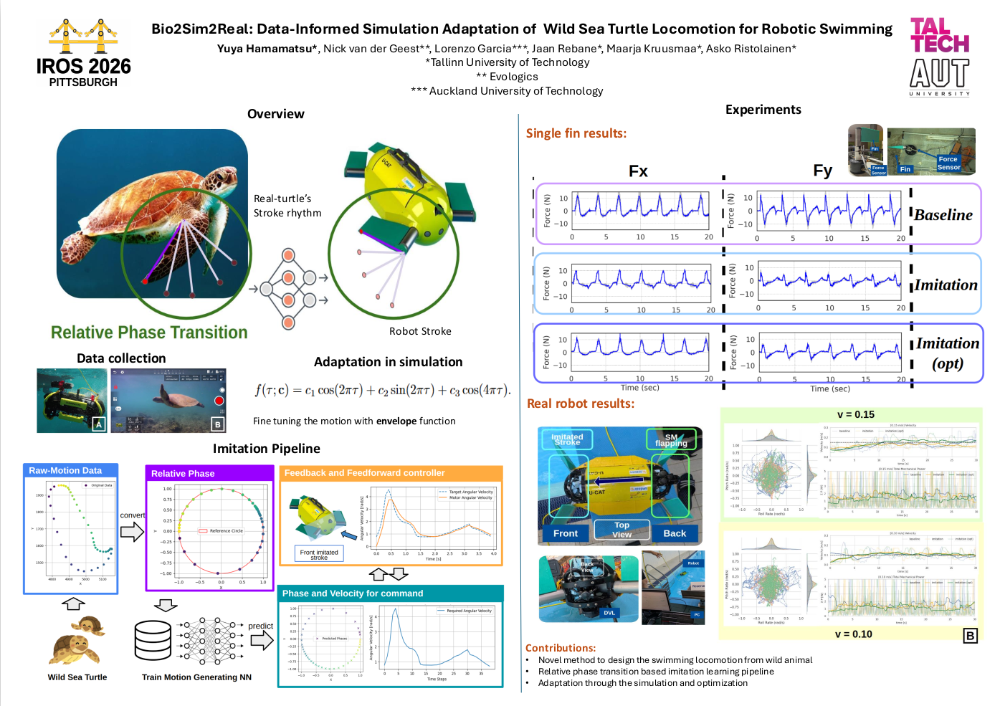
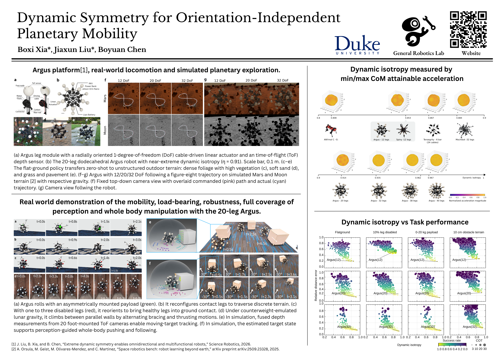
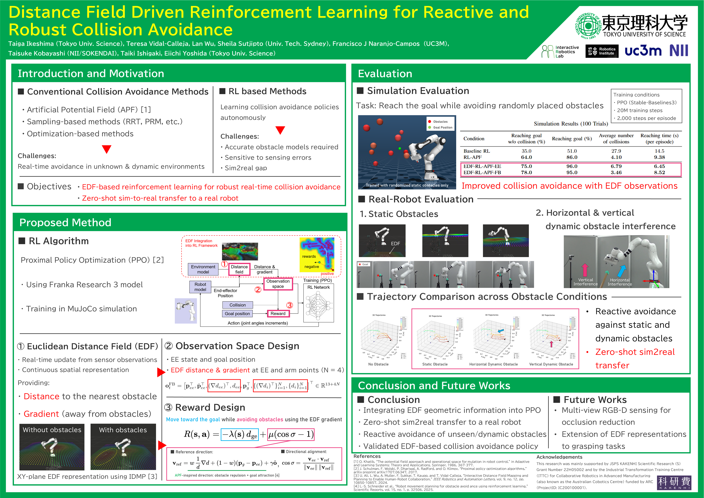
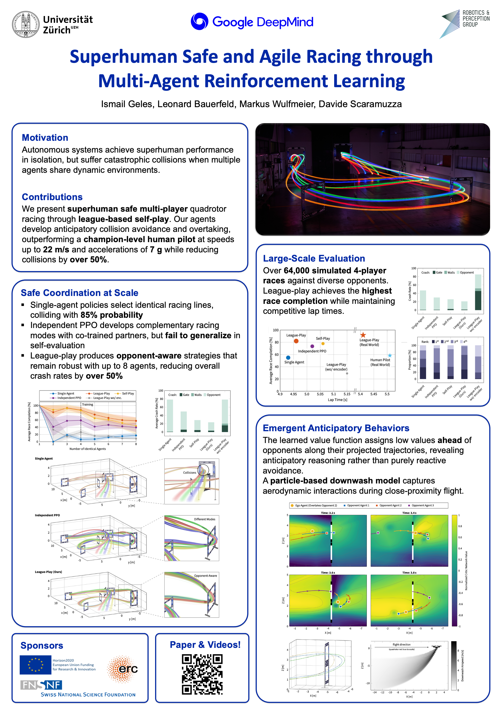
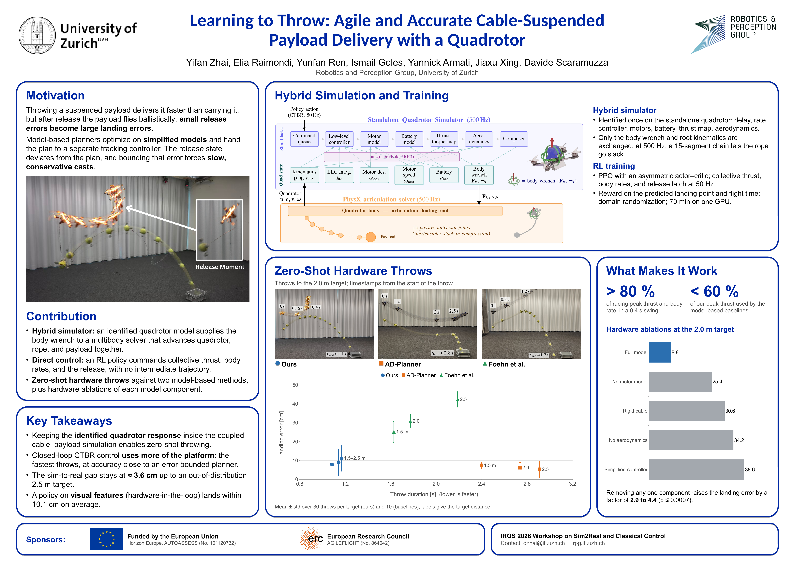
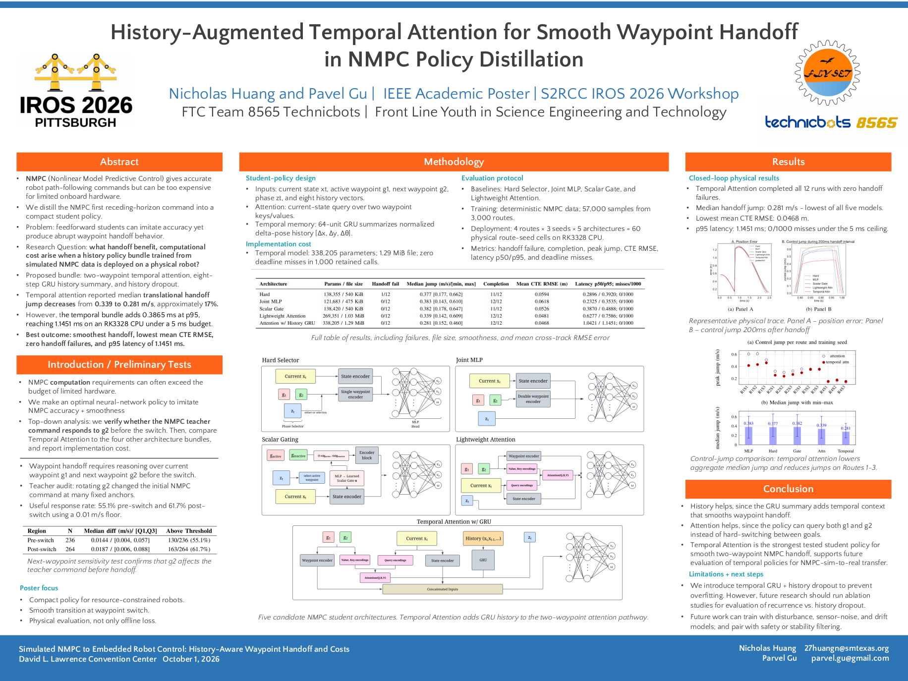

Workshop Posters
Explore the papers and posters accepted at the Sim2Real and Classical Control Workshop at IROS 2026.
Click on a poster to view the full-resolution version or download the PDF.

Bio2Sim2Real: Data-Informed Simulation Adaptation of Wild Sea Turtle Locomotion for Robotic Swimming
Yuya Hamamatsu, Nick van der Geest, Maarja Kruusmaa, Lorenzo Garcia, Jaan Rebane, Asko Ristolainen

Dynamic Symmetry for Orientation-Independent Planetary Mobility
Jiaxun Liu, Boyuan Chen, Boxi Xia

Distance Field Driven Reinforcement Learning for Reactive and Robust Collision Avoidance
Teresa Vidal-Calleja, Taisuke Kobayashi, Taiki Ishigaki, Taiga Ikeshima, Sheila Sutjipto, Lan Wu, Eiichi Yoshida

Bridging the Sim-to-Real Gap for Artificial-Muscle-Driven Continuum Robots Using Physics-Informed Koopman-MPC
Yi Ren, Jiefeng Sun, Jiahe Wang, Eron Ristich, Eric Weissman

Superhuman Safe and Agile Racing through Multi-Agent Reinforcement Learning
Markus Wulfmeier, Leonard Bauersfeld, Ismail Geles, Davide Scaramuzza

Adaptive Rejection of Unknown Hybrid Sinusoidal Disturbances for Bipedal Walking on Multi-Directional Moving Platforms
Yan Gu, Petros Ioannou, I-Chia Chang

Learning to Throw: Agile and Accurate Cable-Suspended Payload Delivery with a Quadrotor
Yunfan Ren, Yifan Zhai, Jiaxu Xing, Ismail Geles, Davide Scaramuzza

Drone Soccer: Learning to Manipulate with Multicopter Downwash
Yutong Wang, Varun Kandiyappan, Sebastian Scherer, Neelay Joglekar, Junyi Geng, Bavin Saravanan

Perching on a Powerline That Moves: Simulator Fidelity for a Wind-Coupled Oscillating Target
Steven Willits, Shreya Sreekantham, Sebastian Scherer, John Liu, Andrew Sippel

Simulated NMPC to Embedded Robot Control: History-Aware Waypoint Handoff and Costs
Parvel Gu, Nicholas Huang